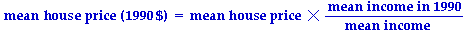

When trying to extract useful information from data, straight analysis of the raw data can sometimes lead you to wrong conclusions. Adjustment of the data prior to analysis may give you more insight into the data.
Seasonally adjusting data
The most common example of this is seasonal adjustment of monthy or quarterly data (described in the previous section). Many economic and social indicators are routinely seasonally adjusted before being reported in the media. You should always be wary of politicians' reports that "the unemployment rate decreased in July" if this claim is supported by figures that are not seasonally adjusted. (Perhaps unemployment rates decrease every July.)
Adjusting to constant dollars
Time series that involve money, such as average incomes or house prices, also need adjustment before they can be meaningfully analysed. A 1980 dollar was worth considerably more than a 2000 dollar, so it is not particularly meaningful to compare, for example, raw car prices in these two years.
To obtain meaningful comparisons, it is important to adjust money data to 'constant' dollars. This can be done in various ways, using the price of some 'standard' commodity. For example, the average income could be used to adjust house prices. To adjust the mean house price in any year to '1990 dollars',

More commonly, the consumer price index (CPI) is used to adjust prices.
Using per capita data
Another example where data should be adjusted prior to analysis is when the raw time series values are dependent on the population size. For example, it gives a misleading impression to report or analyse numbers of telephones in a region over a period in which the population of the region increases. Telephones per person should be examined.
In all cases where time series data are analysed, consider carefully whether you are using the most meaningful representation of the data.